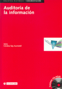

|  |
| About IR |
| Editors |
| Author instructions |
| Copyright |
| Author index |
| Subject index |
| Search |
| Reviews |
| Register |
| Home |
Cristina Soy. Auditoría de la información Editorial UOC, 2002. 158 p. + CD-ROM ISBN: 84-8318-978-X €35.00 [ English translation ]
Si algo echábamos de menos en el ámbito profesional de la gestión de información era la existencia de instrumentos que ayudasen a transformar una teoría genérica en la que existe un consenso, en una práctica profesional estructurada. Hacía falta aclarar el tema de las metodologías aplicables en gestión de información. Además, la existencia de procedimientos técnicos debidamente consolidados es garantía del desarrollo y consolidación de una profesión, que en nuestro caso, el del gestor de información, se encuentra reclamada por diversos colectivos profesionales que comparten un interés común, pero aplican procedimientos y perspectivas diferentes.
Este libro viene a rellenar esa laguna, y lo hace de una manera admirable. En primer lugar, porque pone en el centro a los recursos de información en la organización. En segundo lugar porque integra de forma coherente las corrientes teóricas del estudio de usuarios -satisfacción y necesidades de información- con la evaluación de centros y servicios de información. De esta forma, auditar la información resulta ser un trabajo realizado desde la óptica de los servicios de información de la organización, que engloba al estudio de recursos de información, a los estudios de usuarios y a las evaluaciones en el marco de la gestión estratégica de información.
La realización del libro es excelente, ya que se apoya en una completísima bibliografía, está escrito de modo directo, didáctico y cuenta con unos materiales complementarios en CD-ROM, esquemas, tablas y ejemplos prácticos, que lo hacen, desde nuestra interpretación un material imprescindible para la docencia en gestión de información y la actualización de aquellos profesionales que están en un proceso de cambio desde la gestión de centros de documentación especializados hacia la participación en acciones de mejora estratégica de recursos y flujos de información.
Es de agradecer la existencia de un libro en español, pariente de las obras de los autores de mayor influencia, como pueden ser Orna, Practical information policies, Horton y Burk, InfoMap: a complete guide to discovering corporate information resources; Henczel, The information audit: a practical guide, los reelabora y complementa.
Otro elemento que aumenta el valor de esta obra es la clara voluntad de elaborar un texto centrado en la práctica de la auditoría de la información, evitando desplazar el centro de atención hacia otras áreas. En especial, es de agradecer que no caiga en la fácil tentación de usar el término auditoría del conocimiento, y en general el impreciso campo de la gestión del conocimiento, para tratar de ampliar los posibles lectores interesados en el libro. El libro se limita, y no es poco, a describir cada uno de los aspectos de una actividad profesional que puede estructurarse de modo preciso, y ser reflejo de la potencialidad del profesional de la información en los equipos multidisciplinares que llevan a cabo los proyectos de gestión de información.
Professor José Vicente Rodríguez Muñoz.
Facultad de Ciencias de la Documentación
Universidad de Murcia
Spain
How to cite this review
Rodríguez Muñoz, J.V. (2004) Review of: Auditoría de la información Editorial UOC, 2002. Information Research, 9(2), review no. R121 [Available at: http://informationr.net/ir/reviews/revs121.html]

Cristina Soy. Auditoría de la información Editorial UOC, 2002. 158 p. + CD-ROM ISBN: 84-8318-978-X €35.00
If we missed anything in the professional scope of the Information Management (IM) it was the existence of instruments that helped to transform a generic theory into a structured professional practice. It was necessary to clarify the subject of the applicable methodologies in IM. In addition, the existence of technical procedures properly consolidated is a guarantee of development and consolidation of our profession, the Information Manager, solicited by diverse professional groups that share a common interest, but which apply different procedures and perspectives.
This book comes to fill up that lagoon, and it does of an admirable way. In the first place, it centres information resources in the organization. Secondly, this work coherently merges the theoretical currents of the studies of user-satisfaction and needs with the evaluation of centres and information services. With this perspective, the Information Audit is a task designed from the viewpoint of the information services of the organization, which includes the study of information resources, the studies of users and evaluations within the framework of strategic information management.
The book is excellent: it is supported by a comprehensive bibliography, it is written in a direct and didactic way and has complementary materials included in a CD-ROM with schemes, tables and examples, constituting, from our point of view, an essential resource for instruction in information management and for the update of those professionals who are in a process of change in their organizations.
It is good to have a book written in Spanish, in relation to works of, perhaps, better known authors such as, Practical information policies (Orna); InfoMap: A Complete Guide to Discovering Corporate Information Resources (Horton y Burk) and The information audit: a practical guide (Henczel).
Another element that increases the value of this work is the clear intention to elaborate a practical text on information audits, rather than directing the attention of the reader towards other areas. Especially, we are thankful that the author does not fall in the easy temptation to use the expression 'Knowkedge Audit', and in a more general sense, the vague field of the 'Knowledge Management', to try to extend the publication's reach and to increase the number of interested readers. The book is limited, and it is no small task, to describe each of the aspects of a professional activity that can be precisely structured, reflecting the potential of information management professionals within the structure of organizations.